動画のテーマ：全般不安症編
このビデオは、当財団がYouTube公式チャンネルで定期的に配信している心の健康ビデオセミナーの講演内容の一部を視聴できる動画です。動画のテーマは全般不安症への森田療法です。
YouTube再生リストへ
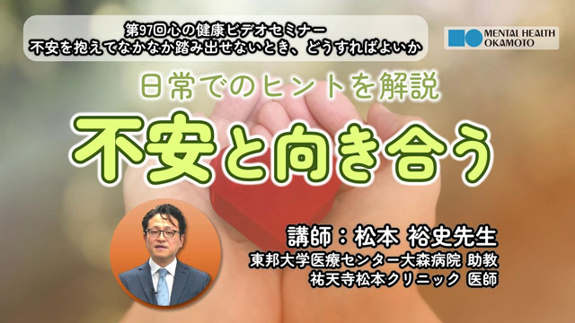
視聴動画（155） 5:43
不安を抱えてなかなか踏み出せないとき、どうすればよいか
（松本裕史先生）
不安とどのように付き合うと良いか、また家族などの支援者はどう接すると良いか解説します。
動画を見る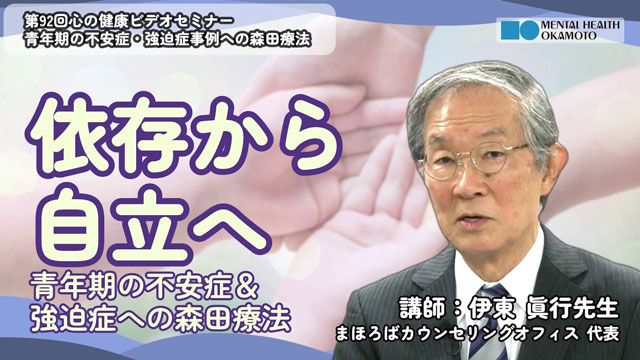
視聴動画（149） 5:13
青年期の不安症・強迫症事例への森田療法～依存から自立への橋渡し～
（伊東眞行先生）
青年期の不安症・強迫症の特徴や発症の背景を述べ、事例の解説に入ります。
動画を見る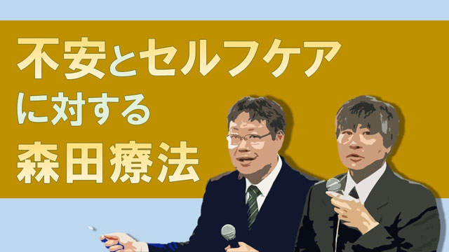
視聴動画（148） 12:48
不安とセルフケアに対する森田療法
（松浦隆信・谷井一夫先生）
セルフケアに活用する森田療法と不安症（パニック、社交不安等）に対する森田療法の治療法及びQ&A集などを紹介します。
動画を見る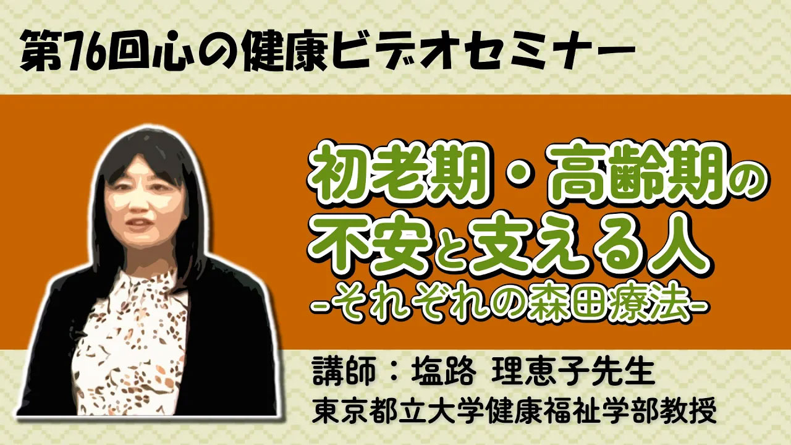
視聴動画（131） 5:28
初老期・高齢期の不安と支える人〜それぞれの森田療法
（塩路理恵子先生）
初老期・高齢期に起こる不安を中心に、加齢に伴う心身の変化や認知症への不安を取り上げ、森田療法の考え方や事例を交えて詳しく解説します。
動画を見る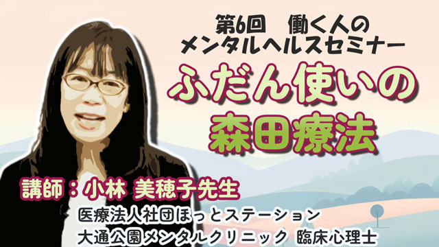
視聴動画（130） 5:12
ふだん使いの森田療法
（小林美穂子先生）
今回の配信では「不安」とは何か、また不安を持ちながら行動する方法について、森田療法の考え方と共に解説します。
動画を見る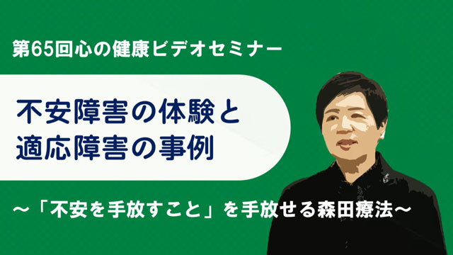
視聴動画（119） 3:58
不安障害の体験と適応障害の事例～「不安を手放すこと」を手放せる森田療法～
（田邉千栄里先生）
講師自身の不安障害の回復体験や、森田療法の概要や考え方を解説します。
動画を見る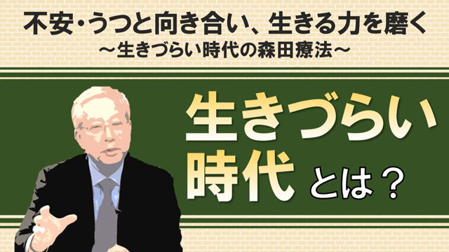
視聴動画（116） 6:38
不安・うつと向き合い、生きる力を磨く～生きづらい時代の森田療法
（北西憲二先生）
薬物服用や治療目標、不安に対する態度の変換など、不眠症（不眠恐怖）に対する森田療法の治療法について解説します。
動画を見る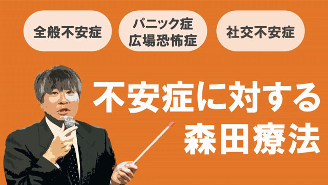
視聴動画（114） 9:05
不安症に対する森田療法
（谷井一夫先生）
社交不安症や全般不安症、パニック・広場恐怖症など、不安症の理解と治療法を解説。Q&Aもあります。
動画を見る視聴動画（109） 12:48
不安とセルフケアに対する森田療法
（松浦隆信先生・谷井一夫先生）
セルフケアに活用する森田療法と不安症（パニック、社交不安等）に対する森田療法の治療法及びQ&A集などを紹介します。
動画を見る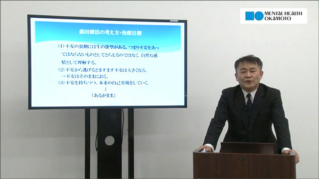
視聴動画（86） 9:36
不安症、強迫症に対する森田療法
（舘野歩先生）
強迫症の特徴を説明した上で、強迫症（不完全恐怖）に対する森田療法の治療例を解説します。
動画を見る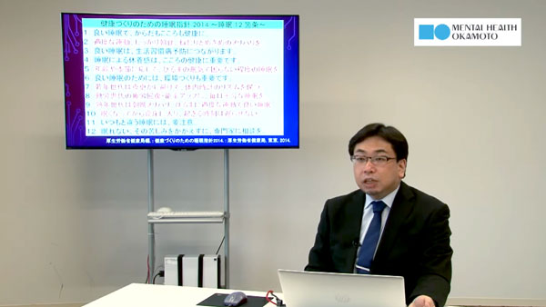
視聴動画（80） 10:40
慢性不眠症の治療と森田療法
（岩下正幸先生）
薬物服用や治療目標、不安に対する態度の変換など、不眠症（不眠恐怖）に対する森田療法の治療法について解説します。
動画を見る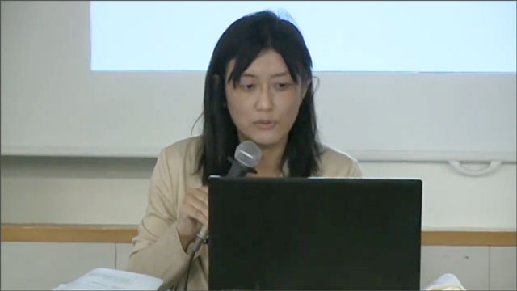
視聴動画（72） 9:50
初老期・老年期の不安、うつと森田療法
（塩路理恵子先生）
初老期、老年期が抱えるを身体的、認知的問題への対応が重要な時代に、森田療法的アプローチについて解説します。
動画を見る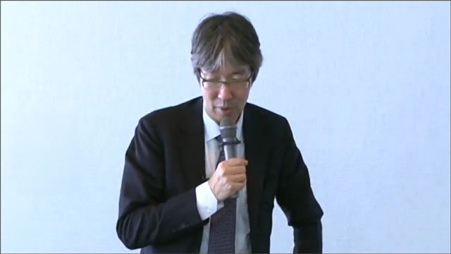
視聴動画（67） 5:02
森田療法の逆説：不安の時代を生きる知恵
（新村秀人先生）
森田療法のうつ病に対する養生論的な考え方や治療法、又コントロール出来る事とできない事を分ける重要性を解説します。
動画を見る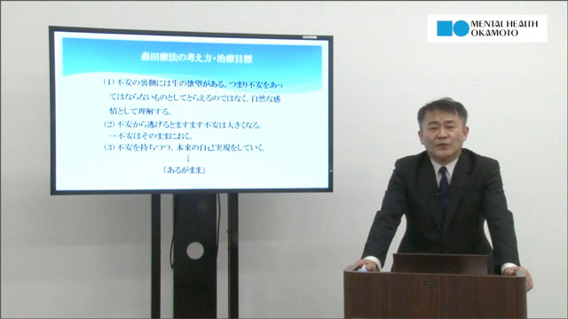
視聴動画（66） 10:28
不安症、強迫症に対する森田療法
（舘野歩先生）
森田療法の基本的な考え方や治療法、治療目標などを説明し、パニック症の事例を通じて分かりやすく解説します。
動画を見る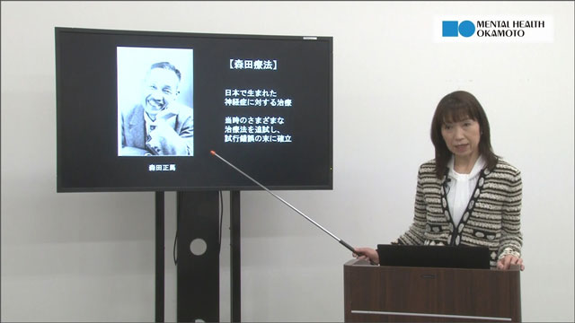
視聴動画（65） 8:10
森田療法による不安との付き合い方
（久保田幹子先生）
森田療法の基本的な考え方を説明し、パニック症に対する外来森田療法の治療法や進め方を解説します。&A形式で配信した内容の概略を視聴できます。
動画を見る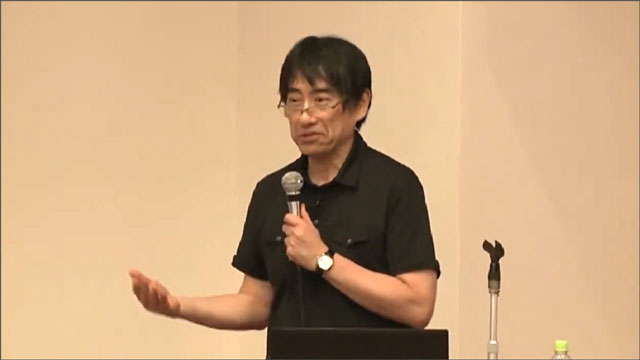
視聴動画（48） 5:07
森田療法の不安と回復のモデル（Q&A）
（山田秀世先生）
森田療法は、不安症を治す精神療法であると共に、人の生き方に関わる心理療法であり、その回復過程に大きな特徴があると言われます。
動画を見る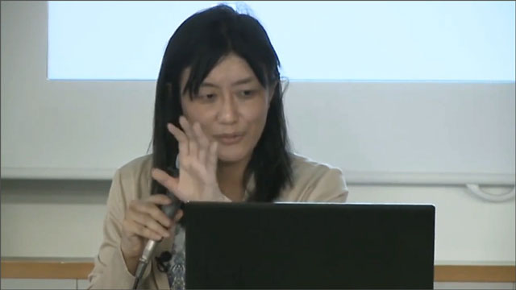
視聴動画（41） 16:23
初老期・老年期の不安・うつと森田療法
（塩路理恵子先生）
初老期・老年期の不安や悩みについて森田療法での考え方について解説しています。
動画を見る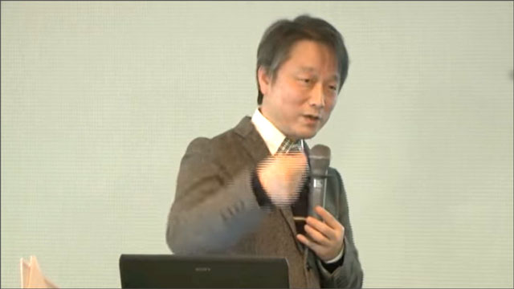
視聴動画（34） 3:13
森田療法による不安や寂しさ等の感情への態度-Q&A
（斎藤直巳先生）
森田療法は、不安や恐怖、苦しみ、悲しみ、寂しさ等の感情をどのように捉えるのか？森田療法の感情に対する態度を質疑応答の中で解説しています。
動画を見る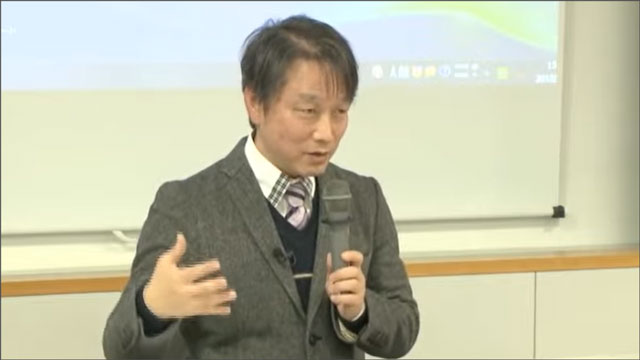
視聴動画（33） 8:28
森田療法による不安との付き合い方
（斎藤直巳先生）
森田療法とはどんな考え方をする治療法で、特に重要な不安に対する態度を森田はどのようにとらえるのか？を解説したものです。
動画を見る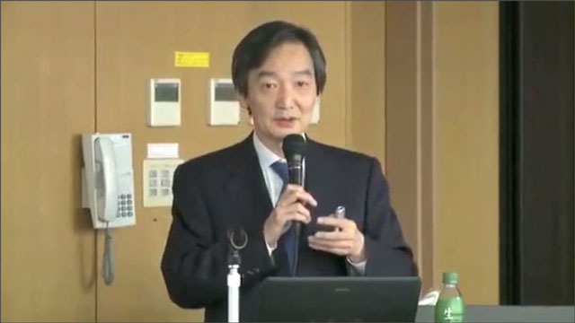
視聴動画（26） 8:05
不安、パニック、うつに「森田療法を活用する」
（中村敬先生）
職場のメンタルヘルスケアをどのように考え、森田療法を活用するかの視点や方法を解説します。
動画を見る